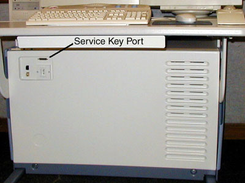

Proprietary to General Electric
Direction 5114045-800, Rev# 10
LightSpeed 4.X Service Information (Advanced)
Proprietary to General Electric |
SCOPE
This section describes Class C software installation and un-installation from a CD-ROM.
On the Operator Console, open a Unix Shell window.
Enter root as a superuser:
At the ctuser prompt, type: su - <ENTER>
At the password prompt, type: #bigguy<ENTER>
Insert the Class C software CD-ROM into the Console CD drive. Wait for the disk read to STOP.
Install the Class C software on the system:
At the superuser prompt, type: install.classC<ENTER>
When the installation process is complete, the Console reports the following:
Finished loading <System Type> Class C software
Verify that the Class C software is on the system:
At the superuser prompt, type: showprods | grep -i classc
Verify that the window displays a list of CLASSC file information and locations. For example (sample output):
I Helios_CLASSC_Product 09/18/2000 Helios OC Class C Product 26_2.8.2I_H2M3_H1.3M4
I Helios_CLASSC_Product.oc_image 09/18/2000 Files used on the Host
I Helios_CLASSC_Product.oc_image.g_subsys 09/18/2000 Files located on the /usr/g partition
I Helios_H2_O2LESS_CLASSC_Product 09/18/2000 Helios H2.0 O2lessOC Class C Product 226_2.8.2I_H2M3_H1.3M4
I Helios_H2_O2LESS_CLASSC_Product.oc_image 09/18/2000 Files used on the Host
I Helios_H2_O2LESS_CLASSC_Product.oc_image.g_subsys 09/18/2000 Files located on the /usr/g partition
Remove the Class C software CD-ROM from the Console CD drive.
Install the service key into the port on the front of the console.
Illustration 1: Service Key Location (GOC shown)

On the Operator Console, open a Unix Shell window.
Enter root as a superuser:
At the ctuser prompt, type: su - <ENTER>
At the password prompt, type: #bigguy<ENTER>
Remove the Class C software from the system:
At the superuser prompt, type: uninstall.classC<ENTER>
When the un-install process is complete, the Console reports the following:
Class C software has been successfully removed from the system.
Verify that the Class C software is no longer on the system:
At the superuser prompt, type: showprods | grep -i classc
Verify that the window DOES NOT display a list of CLASSC file information.